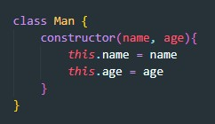
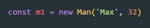
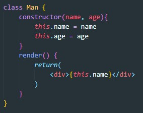
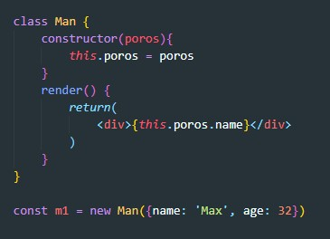
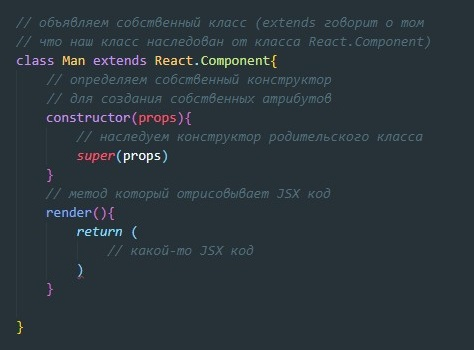
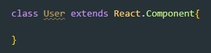
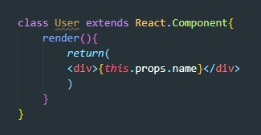
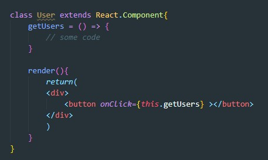
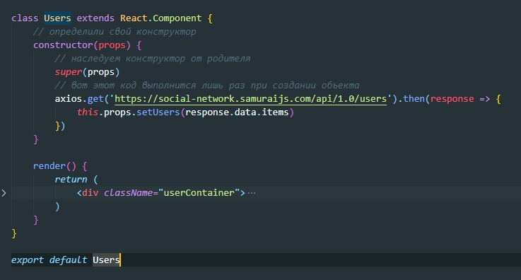

Классы - нужны для создания однотипных объектов на базе эти классов.
Пример
Теперь что бы создать объект на базе нашего класса, нам нужно вызвать конструктор с помощью оператора new и указать имя класса, конструктор которого вызываем. Так же при необходимости передаем начальные значения свойств
Так же мы можем создавать классы, которые будут иметь свои методы. Например наш класс будет иметь метод render, который будет возвращать JSX код
В качестве аргументов для контсруктора не обязательно передавать примитивные типы данных. Мы так же можем передавать объект (например пропсы)
В React мы будем создавать классы вот так:
Классовая компонента - это класс, который наследуется от React.Component и который как минимум имеет метод render, который возвращает JSX код
Создание классовой компоненты выглядит вот так:
Каждая классовая компонента должна иметь метод render. Важный момент!!! props d этот метод не приходят, но этот метод должен возвращать JSX код

Как приходят props в классовую компоненту? Допустим у нас точно так же есть контейнерная компонента созданная с помощью connect. Так как мы наследуем свойства от родительского класса React.Component, то среди этих свойств окажется свойство props и обращаться к ним внутри класса следует через контекстное слово this
Так как мы не указали в нашем классе constructor то наш класс по дефолту унаследовал constructor от родителя (от React.Component), но если есть необходимость мы можем определить свой конструктор. Так же мы может определить дополнительные методы, которые будут вызываться обработчиками события:
Важно еще добавить то, что объект на основании класса в React создается один раз при загрузке страницы, а вот его метод render вызывается каждый раз как только появляется необходимость отрисовать JSX. Что это означает? а то что если мы определяем собственный конструктор класса, т.е. будет так:
то AJAX запрос будет выполнен только при создании объекта (Напомню что объект создается при открытии страницы, когда мы кликаем по Rout то объект исчезает и сохдается заново, а вот при перерисовки изменения в state - добавление записи или ввод текста в input объет не пересоздается)